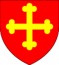

| Name | Prt. | CoA | Lifespan | Notes |
| Solomon I |
 |
 |
1017–1072
Aged 55 |
Wives:- Amica Coleford (m. 1038 d. 1041)
- Mabel Falmouth (m. 1042 d. 1072)
- Mabel (1057–1108)
- Joan (1061–1111)
- Margery (1062–1063)
|
| Ringer |
|
|
1021–1022
Aged 1 |
|
| Margery |
 |
|
1023–1088
Aged 65 |
Married Arthur Malton in 1036
- Arthur (1054–1126)
- Elias (1056–1060)
- Christiana (1060–1119)
- Margery (1061–1111)
- Elias (1068–1098)
|
| Joan |
 |
|
1024–1091
Aged 67 |
Married Milo Sidmouth in 1040
- Godeleva (1045–1061)
- Lucia (1049–1113)
- Jocelyn (1052–1053)
- Jocelyn (1054–1107)
- Milo (1057–1065)
- Benedict (1060–1061)
- Estrild (1061–1107)
|
| Aylwin |
|
|
1025–1027
Aged 2 |
|
| Lucia |
|
 |
1026–1089
Aged 63 |
Married Jocelyn Sidmouth in 1040
- Godeleva (1045)
- Estrild (1048–1125)
- Milo (1050–1052)
- Jocelyn (1051–1102)
- Lucia (1054–1063)
- Milo (1056–1058)
|
| Alice |
|
|
1030–1086
Aged 56 |
Married Lagot Huddersfield in 1053
- Agnes (1061–1111)
- Letard (1062–1113)
- Arnold (1067–1122)
- Rose (1068–1134)
|
| Ringer |
|
|
1031–1048
Aged 17 |
|
| Aylwin I |
|
|
1033–1089
Aged 56 |
Married Lucia Falmouth in 1072
- Amica (1073–1127)
- Ringer (1075–1076)
- Aylwin (1078–1087)
- Ringer III (1085–1140)
|
| Ailova |
|
|
1034–1035
Aged 1 |
|
| Amica |
|
|
1035–1037
Aged 2 |
|
| Ailova |
|
|
1037–1042
Aged 5 |
|
| Gervase |
 |
|
1038–1105
Aged 67 |
Married Estrild Sidmouth in 1063
- Ringer (1065–1076)
- Lucia (1067–1072)
- Gervase (1070–1086)
- Margery (1073–1082)
- Estrild (1074–1078)
- Joan (1075–1094)
- Alice (1076–1126)
- Estrild (1078–1079)
- Aylwin (1080–1096)
- Ringer (1081–1083)
- Philip (1082–1132)
- Estrild (1083–1110)
|
| Philip |
|
|
1041–1052
Aged 11 |
|